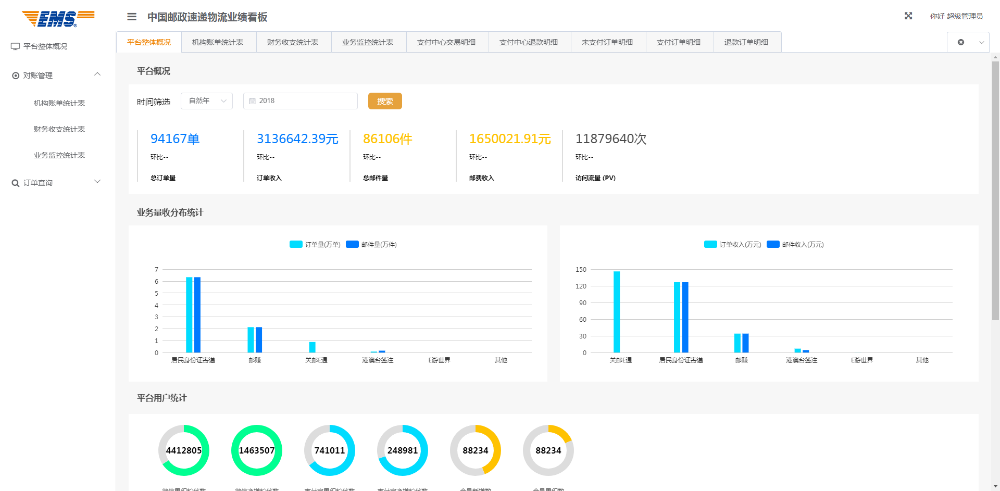
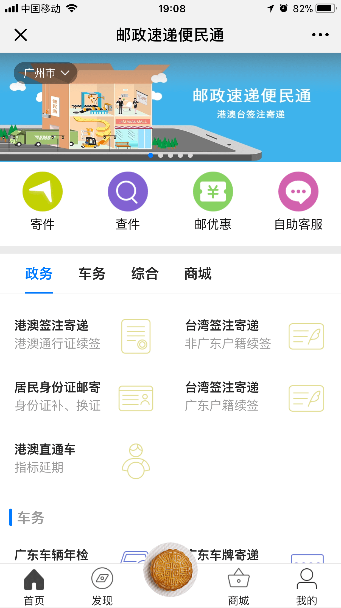
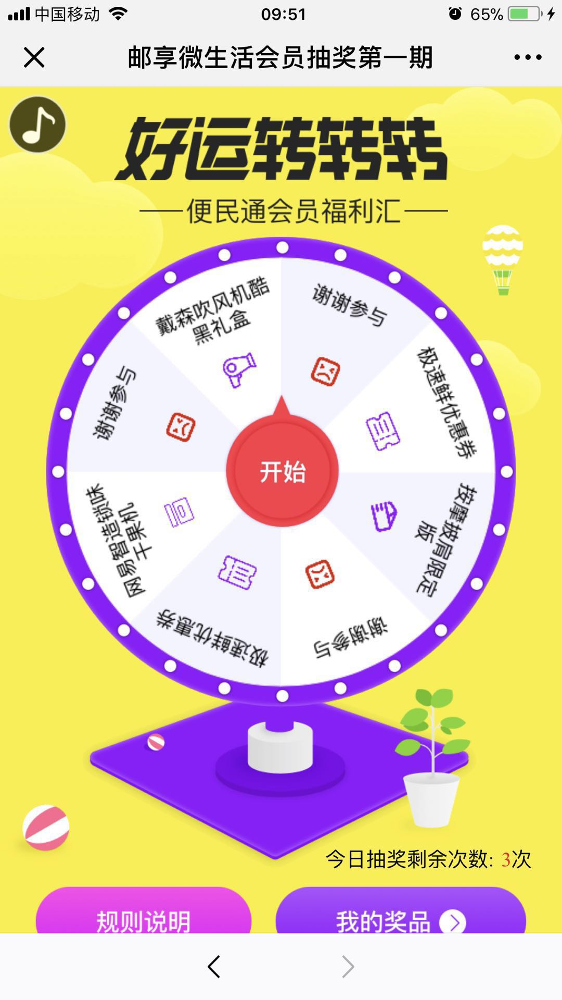
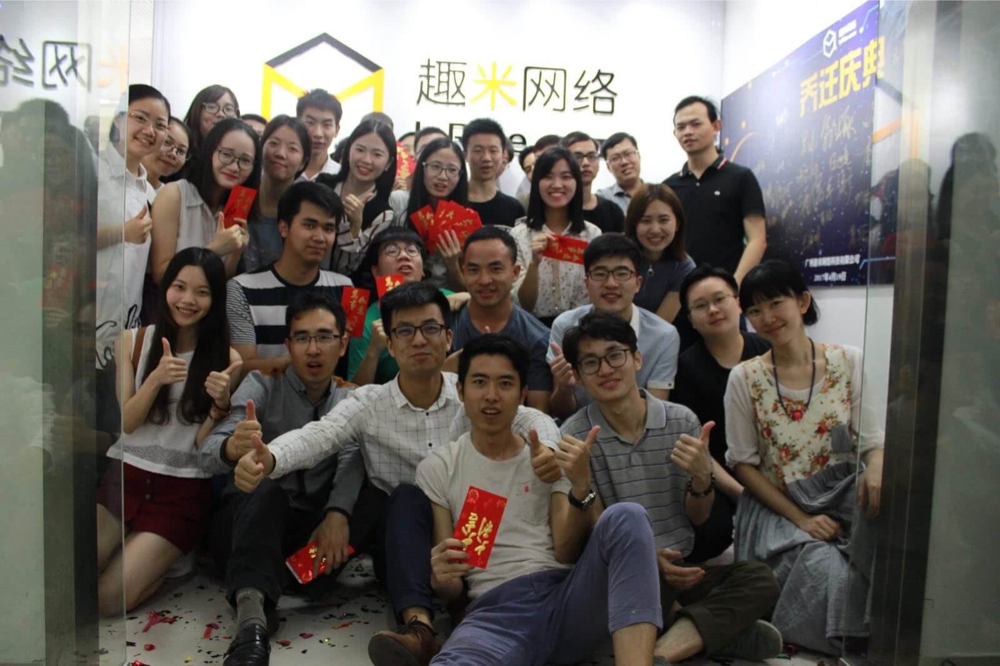
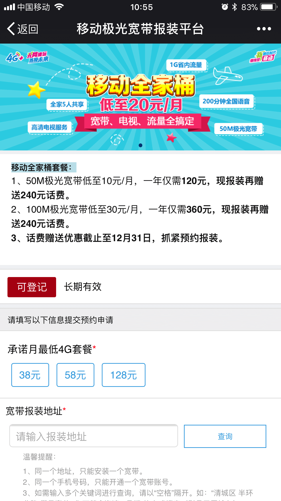
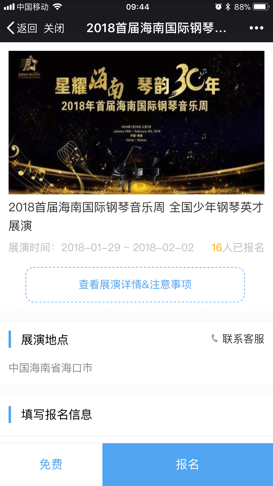
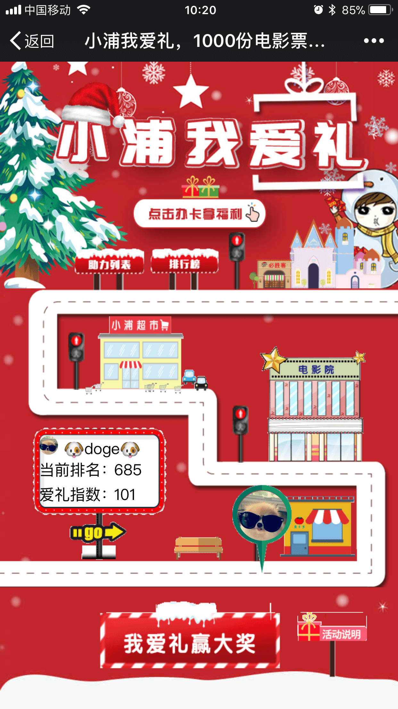
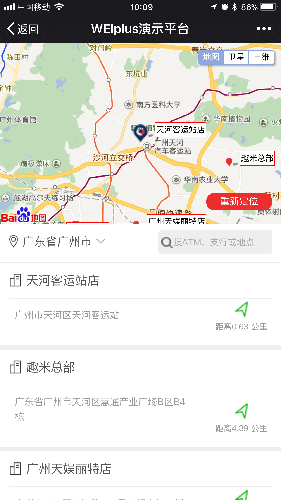

Postal Internal Technology Group - Futuresu Akira, Official Senior Class 2015, Undergraduate Yu Self - Technical Group. Major business practices Government type Typical rejected business type.
When I entered this technical team, the front-end technology stack here is still in a relatively backward stage, using jsp nested html mode. I came in and changed the front-end technology stack here, using the front-end separation mode of VUE.
EMS
DataCenter

Data center management background centralizes all EMS data management
EMS
Xiaoyou House

We will open the WeChat public account, referred to as the Xiaoyou home. Providing services from various cities, users can find the business they need to handle through this portal. A public number integrates all the pages for the convenience of the user.
VUEEMS
Member Activities

The Grand Carousel is a member-only event that allows members to receive benefits. Members can take three free copies per day, and of course they can also use points.
JS
inrice (趣米)

"Inrice" is a digital marketing company that divides these departments: operations, development, planning, and products. I am involved in front-end R&D work in the development department.
Inrice
清远移动（业务预约平台）

The reservation platform is a business branch of Qingyuan Mobile. Users can choose the business they want to handle on this platform to make an appointment. The front-end technology of this project uses vue, and the functions are dynamically configured.
The flop is an event of the Pudong Credit Card Public Number, which is used to attract fans to apply for credit cards. The style of this event is dynamically configured, and the winning threshold is based on the minimum number of invites from the back end.
JS
SAE

The SAE project is an event registration platform of the China Music Association. Throughout the country, you can choose your own music project to register, including piano level examination, grade certification, and training classes.
JS
Assisting activity

Power-assisting activities, strong ability to absorb powder, each time a user is invited to help click on the power, you can get the corresponding prize. The technical difficulty of this activity is to make a smooth treatment at every corner.
JS
WeiPlus

Weplus is a set of WeChat public number h5 products based on back-end rendering, one of which is store navigation. This function mainly uses Baidu map, according to the distance of the store and the current location of the user, to screen the nearest store for the user.